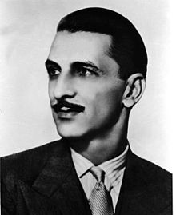

J. R. D. Tata was born as Jehangir on 29 July 1904 into a Parsi family. He was the second child of businessman Ratanji Dadabhoy Tata and his French wife, Suzanne "Sooni" Brière. His father was a first cousin of Jamsetji Tata, a pioneer industrialist in India. He had one elder sister Sylla, a younger sister Rodabeh and two younger brothers Darab and Jimmy Tata. His sister, Sylla, was married to Dinshaw Maneckji Petit, the second baronet of Petits. His niece, Rattanbai Petit, was the wife of Muhammad Ali Jinnah, who later became the founder of Pakistan in August 1947. His grandniece, Dina Jinnah, was married to Neville Wadia, a notable businessman.
As his mother was French, he spent much of his childhood in France and as a result, French was his first language. He attended the Janson De Sailly School in Paris. One of the teachers at that school used to call him L'Egyptian for some strange reason. Tata also served for one year in a Spahis regiment during the Second World War. After he left the service the whole regiment perished on an expedition in Morocco.
He attended the Cathedral and John Connon School, Bombay. Tata got educated in London, Japan, France and India. When his father joined the Tata company he moved the whole family to London. During this time, J.R.D's mother died at an early age of 43 while his father was in India and his family was in France.
After his mother's death, Ratanji Dadabhoy Tata decided to move his family to India and sent J.R.D to England for higher studies in October 1923. He was enrolled in a Grammar school, and was interested in studying Engineering at Cambridge. Just as the Grammar course was ending and he was hoping to enter Cambridge, a law was passed in France to draft into the army, for two years, all French boys at the age of 20.
As a citizen of France J.R.D had to enlist in the army for at least 1 year. In between the Grammar school and his time in the army, he spent a brief spell at home in Bombay. After joining the French Army he was posted into the regiment called Spahis (The Sepoys). Soon the Colonel of the regiment found that there was a member of his Squadron who could not only read and write French and English, but could type as well; so he assigned him as a secretary in his office.
Tata was once again transferred to the more luxurious office of a colonel. After a 12-month period of conscription in the French Army he wanted to proceed to Cambridge for further education, but his father decided to bring him back to India and he joined the Tata Company.
In 1929, JRD renounced his French citizenship and became an Indian citizen, and started working at Tata. In 1930 JRD married Thelma Vicaji, the daughter of Jack 'Prince' Vicaji, a colourful lawyer whom he hired to defend him on a charge of driving his Bugatti too fast along Bombay's main promenade, Marine Drive. Previously he had been engaged to Dinbai Mehta, the future mother of The Economist editor Shapur Kharegat.
J. R. D. Tata was inspired early by pioneer Louis Blériot, and took to flying. On 10 February 1929, Tata obtained the first pilot licence issued in India. He later came to be known as the father of Indian civil aviation. He founded India's first commercial airline, Tata Airlines in 1932, which became Air India in 1946, now India's national airline.He and Nevill Vintcent worked together in building Tata Airlines. They were also friends.
He joined Tata Sons as an unpaid apprentice in 1925. In 1938, at the age of 34, JRD was elected Chairman of Tata Sons making him the head of the largest industrial group in India. He took over as Chairman of Tata Sons from his second cousin Nowroji Saklatwala. For decades, he directed the huge Tata Group of companies, with major interests in steel, engineering, power, chemicals and hospitality. He was famous for succeeding in business while maintaining high ethical standards – refusing to bribe politicians or use the black market.
Under his chairmanship, the assets of the Tata Group grew from US$100 million to over US$5 billion. He started with 14 enterprises under his leadership and half a century later on 26 July 1988, when he left, Tata Sons was a conglomerate of 95 enterprises which they either started or in which they had controlling interest.
He was the trustee of the Sir Dorabji Tata Trust from its inception in 1932 for over half a century. Under his guidance, this Trust established Asia's first cancer hospital, the Tata Memorial Centre for Cancer, Research and Treatment, in Bombay in 1941. He also founded the Tata Institute of Social Sciences (TISS, 1936), the Tata Institute of Fundamental Research (TIFR, 1945), and the National Center for Performing Arts.
In 1945, he founded Tata Motors. In 1948, JRD Tata launched Air India International as India's first international airline. In 1953, the Indian Government appointed JRD Tata as Chairman of Air India and a director on the Board of Indian Airlines – a position he retained for 25 years. For his crowning achievements in aviation, he was bestowed with the title of Honorary Air Commodore of India.
JRD Tata cared greatly for his workers. In 1956, he initiated a program of closer 'employee association with management' to give workers a stronger voice in the affairs of the company. He firmly believed in employee welfare and espoused the principles of an eight-hour working day, free medical aid, workers' provident scheme, and workmen's accident compensation schemes,which were later, adopted as statutory requirements in India.
Tata was also controversially supportive of the declaration of emergency powers by Prime Minister, Indira Gandhi, in 1975. He is quoted to have told a reporter of the New York Times, "things had gone too far. You can’t imagine what we’ve been through here—strikes, boycotts, demonstrations. Why, there were days I couldn’t walk out of my office into the street. The parliamentary system is not suited to our needs.He was also a founding member of the first Governing Body of NCAER, the National Council of Applied Economic Research in New Delhi,India's first independent economic policy institute established in 1956. In 1968, he founded Tata Consultancy Services as Tata Computer Centre. In 1979, Tata Steel instituted a new practice: a worker being deemed to be "at work" from the moment he leaves home for work till he returns home from work. This made the company financially liable to the worker for any mishap on the way to and from work. In 1987, he founded Titan Industries. Jamshedpur was also selected as a UN Global Compact City because of the quality of life, conditions of sanitation, roads and welfare that were offered by Tata Steel.
JRD Tata received a number of awards. He was conferred the honorary rank of Group Captain by the Indian Air Force in 1948, was promoted to the Air Commodore rank (equivalent to Brigadier in army), and was further promoted on 1 April 1974 to the Air Vice Marshal rank. Several international awards for aviation were given to him – The Tony Jannus Award in March 1979, the Gold Air Medal of the Federation Aeronautique Internationale in 1985, the Edward Warner Award of the International Civil Aviation Organisation, Canada in 1986 and the Daniel Guggenheim Award in 1988. He received the Padma Vibhushan in 1955. The French Legion of Honour was bestowed on him in 1983. In 1992, because of his selfless humanitarian endeavours, JRD Tata was awarded India's highest civilian honour, the Bharat Ratna. In the same year, JRD Tata was also bestowed with the United Nations Population Award for his crusading endeavours towards initiating and successfully implementing the family planning movement in India, much before it became an official government policy. In his memory, the Government of Maharashtra named its first double-decker bridge the Bharatratna JRD Tata Overbridge at Kasarwadi Phata, Pune.
JRD Tata died in Geneva, Switzerland on 29 November 1993 at the age of 89 of a kidney infection. Upon his death, the Indian Parliament was adjourned in his memory – an honour not usually given to persons who are not members of parliament. He was buried at the Père Lachaise Cemetery in Paris.